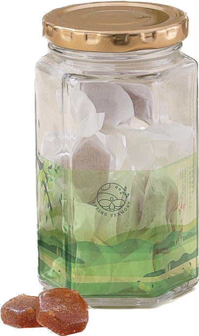

It's not just Candy
It's Spring Vermont
수리산에서 온 벌꿀은 주변 농경지가 없는 깊은 수리산의 산속 청정지역에서 자연숙성 되어 채밀되는 귀한 꿀입니다.
수리산의 꿀과 목 건강에 도움이 되는 자연재료를 함께 블렌딩 해 목을 위한 캔디, ‘목캔디’를 만들었습니다. Learn More

수리산에서 온 벌꿀은 주변 농경지가 없는 깊은 수리산의 산속 청정지역에서 자연숙성 되어 채밀되는 귀한 꿀입니다.
수리산의 꿀과 목 건강에 도움이 되는 자연재료를 함께 블렌딩 해 목을 위한 캔디, ‘목캔디’를 만들었습니다. Learn More